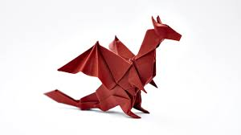

Origami Designs
About UsFollow Us

Anout the swan:-
- Swans are birds of the family Anatidae within the genus Cygnus.
- The swans' closest relatives include the geese and ducks.
- Swans are grouped with the closely related geese in the subfamily Anserinae where they form the tribe Cygnini.
- Sometimes, they are considered a distinct subfamily, Cygninae.

About the dragon :-
- dragon is a large, serpentine legendary creature that appears in the folklore of many cultures around the world.
- Beliefs about dragons vary considerably through regions,
- but dragons in western cultures since the High Middle Ages have often been depicted as winged,
- horned, four-legged, and capable of breathing fire